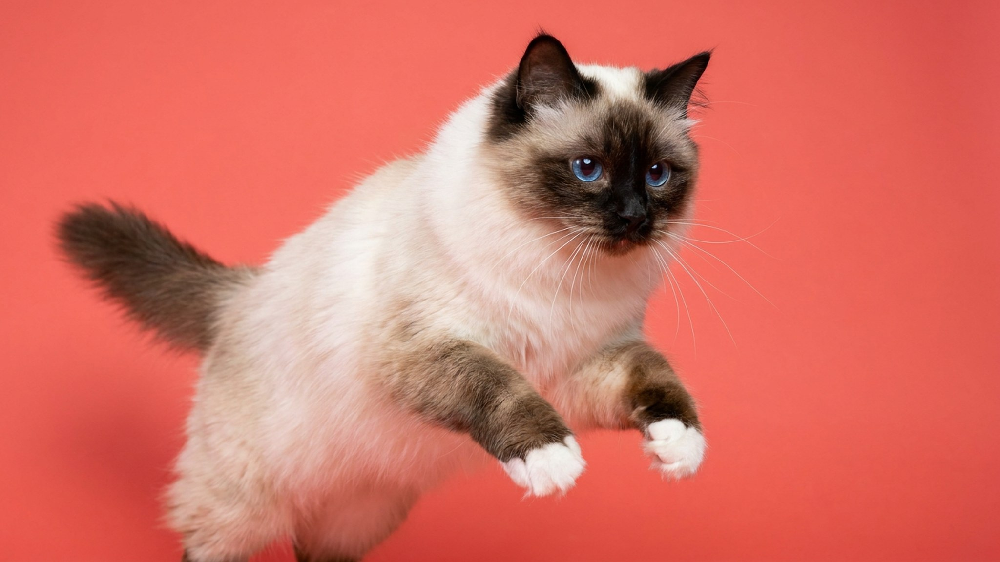

Бирма идёт за хозяином из комнаты в комнату — без мяуканья, без навязчивости, просто рядом. Это не случайность: священная бирма устроена так, что одиночество переносит плохо, а привязанность выражает действием, а не голосом. Ниже — что это значит в быту, как выглядит уход за её полудлинной шерстью и почему белые «перчатки» на лапах считаются особым достоинством породы.
🐾 Спросите AI-ветеринара прямо сейчас
AnimaLife — приложение, где AI-ветеринар отвечает на вопросы о кошке или собаке 24/7. Бесплатно, без записи и очередей.
Священная бирма — одна из самых тихих пород. Голос у неё есть, но она им почти не пользуется: просит внимания присутствием, а не криком. При этом привязанность очень сильная — бирма следует за хозяином, ложится рядом, охотно идёт на руки и не любит оставаться в квартире одна надолго.
С детьми порода уживается хорошо: бирма терпелива и не агрессивна. С другими кошками и спокойными собаками тоже, как правило, находит общий язык. Если в доме бывает много гостей — бирма скорее понаблюдает с дивана, чем спрячется под кровать.
Бирму несложно узнать: светлое (кремовое или белое) тело, тёмные «пойнты» на морде, ушах, лапах и хвосте — как у колор-пойнт кошек, — и обязательно белые симметричные «перчатки» на всех четырёх лапах. Именно перчатки считаются породным признаком: у стандартных животных они строго ограничены и одинаковы по форме.
Глаза — насыщенно-голубые, округлые. Телосложение плотное, средне-крупное: взрослые коты весят 5–7 кг, кошки — 4–5 кг. Бирма не акробатична — она скорее домашний, неторопливый зверь, чем вечный двигатель.
Шерсть у священной бирмы полудлинная, шёлковистая — и, что важно, почти без подшёрстка. Именно отсутствие подшёрстка делает уход проще: шерсть практически не сваливается в колтуны. Но вычёсывание всё равно нужно — раз в неделю в обычный период и чаще во время линьки (весна, осень).
Вопросы по уходу за конкретной кошкой — частота вычёсывания, питание, профилактические осмотры — лучше обсудить с ветеринаром.
Бирма не разнесёт квартиру, если остаётся одна на несколько часов, но продолжительное одиночество переносит плохо. Хорошее решение — завести пару: бирмы ладят между собой и меньше скучают.
Порода подходит семьям с детьми школьного возраста и людям, которые проводят дома достаточно времени. Темп жизни у бирмы умеренный: игры она любит, но не требует их каждые полчаса. Главное для неё — контакт с человеком.
🐾 Дневник здоровья питомца — в кармане
Вес, прививки, симптомы и напоминания в одном приложении. AnimaLife следит за здоровьем питомца вместо вас.
🐾 Понравился разбор?
Подпишитесь на канал — каждый день разбираем по одному тревожному симптому у кошек и собак: что в пределах нормы, а когда пора к врачу. Подпишитесь, чтобы не пропустить разбор, который может спасти здоровье вашего питомца.
Материал носит информационный характер и не заменяет очную консультацию ветеринара.